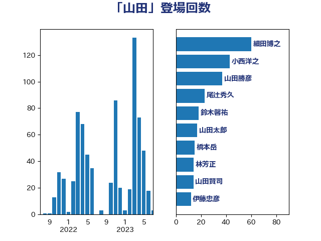

単語「山田」

| 細田博之 | 自由民主党 | 60 回 |
| 小西洋之 | 立憲民主党 | 43 回 |
| 山田勝彦 | 立憲民主党 | 37 回 |
| 尾辻秀久 | 無所属 | 23 回 |
| 鈴木馨祐 | 自由民主党 | 18 回 |
| 山田太郎 | 自由民主党 | 17 回 |
| 橋本岳 | 自由民主党 | 15 回 |
| 林芳正 | 自由民主党 | 14 回 |
| 山田賢司 | 自由民主党 | 14 回 |
| 伊藤忠彦 | 自由民主党 | 12 回 |
| 自見はなこ | 自由民主党 | 11 回 |
| 福山哲郎 | 立憲民主党 | 11 回 |
| 山田宏 | 自由民主党 | 10 回 |
| 山口俊一 | 自由民主党 | 10 回 |
| 竹内譲 | 公明党 | 9 回 |
| 根本匠 | 自由民主党 | 9 回 |
| 足立康史 | 日本維新の会 | 8 回 |
| 米山隆一 | 立憲民主党 | 8 回 |
| 阿部司 | 日本維新の会 | 7 回 |
| 野村哲郎 | 自由民主党 | 7 回 |
| 笹川博義 | 自由民主党 | 7 回 |
| 稲田朋美 | 自由民主党 | 7 回 |
| 松村祥史 | 自由民主党 | 7 回 |
| 杉尾秀哉 | 立憲民主党 | 7 回 |
| 山田俊男 | 自由民主党 | 7 回 |
| 嘉田由紀子 | 無所属 | 7 回 |
| 伊藤岳 | 日本共産党 | 7 回 |
| 黄川田仁志 | 自由民主党 | 6 回 |
| 長妻昭 | 立憲民主党 | 6 回 |
| 矢倉克夫 | 公明党 | 6 回 |
| 山田美樹 | 自由民主党 | 6 回 |
| 山東昭子 | 自由民主党 | 6 回 |
| 階猛 | 立憲民主党 | 5 回 |
| 海江田万里 | 立憲民主党 | 5 回 |
| 森屋宏 | 自由民主党 | 5 回 |
| 末松信介 | 自由民主党 | 5 回 |
| 宮本岳志 | 日本共産党 | 5 回 |
| 古賀篤 | 自由民主党 | 5 回 |
| 齋藤健 | 自由民主党 | 4 回 |
| 鎌田さゆり | 立憲民主党 | 4 回 |
| 重徳和彦 | 立憲民主党 | 4 回 |
| 松沢成文 | 日本維新の会 | 4 回 |
| 平木大作 | 公明党 | 4 回 |
| 小倉將信 | 自由民主党 | 4 回 |
| 寺田静 | 無所属 | 4 回 |
| 安江伸夫 | 公明党 | 4 回 |
| 上野賢一郎 | 自由民主党 | 4 回 |
| 鶴保庸介 | 自由民主党 | 3 回 |
| 高市早苗 | 自由民主党 | 3 回 |
| 阿達雅志 | 自由民主党 | 3 回 |
| 鈴木庸介 | 立憲民主党 | 3 回 |
| 鈴木宗男 | 日本維新の会 | 3 回 |
| 野中厚 | 自由民主党 | 3 回 |
| 芳賀道也 | 国民民主党 | 3 回 |
| 福島みずほ | 社会民主党 | 3 回 |
| 石橋通宏 | 立憲民主党 | 3 回 |
| 田村まみ | 国民民主党 | 3 回 |
| 滝沢求 | 自由民主党 | 3 回 |
| 池畑浩太朗 | 日本維新の会 | 3 回 |
| 松野博一 | 自由民主党 | 3 回 |
| 松島みどり | 自由民主党 | 3 回 |
| 杉本和巳 | 日本維新の会 | 3 回 |
| 本田顕子 | 自由民主党 | 3 回 |
| 本村伸子 | 日本共産党 | 3 回 |
| 川田龍平 | 立憲民主党 | 3 回 |
| 岸真紀子 | 立憲民主党 | 3 回 |
| 岡田直樹 | 自由民主党 | 3 回 |
| 山添拓 | 日本共産党 | 3 回 |
| 山本香苗 | 公明党 | 3 回 |
| 吉田はるみ | 立憲民主党 | 3 回 |
| 古賀友一郎 | 自由民主党 | 3 回 |
| 加藤勝信 | 自由民主党 | 3 回 |
| 佐藤信秋 | 自由民主党 | 3 回 |
| 鷲尾英一郎 | 自由民主党 | 2 回 |
| 高良鉄美 | 無所属 | 2 回 |
| 高木啓 | 自由民主党 | 2 回 |
| 青木一彦 | 自由民主党 | 2 回 |
| 長谷川岳 | 自由民主党 | 2 回 |
| 長島昭久 | 自由民主党 | 2 回 |
| 蓮舫 | 立憲民主党 | 2 回 |
| 葉梨康弘 | 自由民主党 | 2 回 |
| 船橋利実 | 自由民主党 | 2 回 |
| 秋葉賢也 | 自由民主党 | 2 回 |
| 石川大我 | 立憲民主党 | 2 回 |
| 石井浩郎 | 自由民主党 | 2 回 |
| 田中健 | 国民民主党 | 2 回 |
| 牧山ひろえ | 立憲民主党 | 2 回 |
| 牧原秀樹 | 自由民主党 | 2 回 |
| 津島淳 | 自由民主党 | 2 回 |
| 松木けんこう | 立憲民主党 | 2 回 |
| 松原仁 | 立憲民主党 | 2 回 |
| 後藤茂之 | 自由民主党 | 2 回 |
| 川合孝典 | 国民民主党 | 2 回 |
| 岸田文雄 | 自由民主党 | 2 回 |
| 山下芳生 | 日本共産党 | 2 回 |
| 小田原潔 | 自由民主党 | 2 回 |
| 小沼巧 | 立憲民主党 | 2 回 |
| 寺田学 | 立憲民主党 | 2 回 |
| 奥野総一郎 | 立憲民主党 | 2 回 |
| 大岡敏孝 | 自由民主党 | 2 回 |
| 国定勇人 | 自由民主党 | 2 回 |
| 古川禎久 | 自由民主党 | 2 回 |
| 亀岡偉民 | 自由民主党 | 2 回 |
| 中曽根弘文 | 自由民主党 | 2 回 |
| 三浦信祐 | 公明党 | 2 回 |
| 三原じゅん子 | 自由民主党 | 2 回 |
| 鬼木誠 | 立憲民主党 | 1 回 |
| 高橋克法 | 自由民主党 | 1 回 |
| 高木毅 | 自由民主党 | 1 回 |
| 馬場成志 | 自由民主党 | 1 回 |
| 長友慎治 | 国民民主党 | 1 回 |
| 鈴木淳司 | 自由民主党 | 1 回 |
| 金子道仁 | 日本維新の会 | 1 回 |
| 野田聖子 | 自由民主党 | 1 回 |
| 遠藤良太 | 日本維新の会 | 1 回 |
| 進藤金日子 | 自由民主党 | 1 回 |
| 近藤和也 | 立憲民主党 | 1 回 |
| 谷田川元 | 立憲民主党 | 1 回 |
| 舩後靖彦 | れいわ新選組 | 1 回 |
| 舟山康江 | 国民民主党 | 1 回 |
| 篠原孝 | 立憲民主党 | 1 回 |
| 福田昭夫 | 立憲民主党 | 1 回 |
| 石橋林太郎 | 自由民主党 | 1 回 |
| 田中英之 | 自由民主党 | 1 回 |
| 玄葉光一郎 | 立憲民主党 | 1 回 |
| 浮島智子 | 公明党 | 1 回 |
| 泉健太 | 立憲民主党 | 1 回 |
| 江田憲司 | 立憲民主党 | 1 回 |
| 比嘉奈津美 | 自由民主党 | 1 回 |
| 武部新 | 自由民主党 | 1 回 |
| 横沢高徳 | 立憲民主党 | 1 回 |
| 榛葉賀津也 | 国民民主党 | 1 回 |
| 森田俊和 | 立憲民主党 | 1 回 |
| 梅村聡 | 日本維新の会 | 1 回 |
| 柳ヶ瀬裕文 | 日本維新の会 | 1 回 |
| 松本剛明 | 自由民主党 | 1 回 |
| 東徹 | 日本維新の会 | 1 回 |
| 杉田水脈 | 自由民主党 | 1 回 |
| 木原稔 | 自由民主党 | 1 回 |
| 朝日健太郎 | 自由民主党 | 1 回 |
| 新妻秀規 | 公明党 | 1 回 |
| 斉藤鉄夫 | 公明党 | 1 回 |
| 打越さく良 | 立憲民主党 | 1 回 |
| 徳永久志 | 無所属 | 1 回 |
| 島尻安伊子 | 自由民主党 | 1 回 |
| 山本佐知子 | 自由民主党 | 1 回 |
| 山下貴司 | 自由民主党 | 1 回 |
| 尾崎正直 | 自由民主党 | 1 回 |
| 宮沢洋一 | 自由民主党 | 1 回 |
| 宮崎雅夫 | 自由民主党 | 1 回 |
| 太田房江 | 自由民主党 | 1 回 |
| 大西健介 | 立憲民主党 | 1 回 |
| 塩田博昭 | 公明党 | 1 回 |
| 塚田一郎 | 自由民主党 | 1 回 |
| 堤かなめ | 立憲民主党 | 1 回 |
| 城内実 | 自由民主党 | 1 回 |
| 和田政宗 | 自由民主党 | 1 回 |
| 吉田統彦 | 立憲民主党 | 1 回 |
| 古川俊治 | 自由民主党 | 1 回 |
| 友納理緒 | 自由民主党 | 1 回 |
| 伊佐進一 | 公明党 | 1 回 |
| 中村裕之 | 自由民主党 | 1 回 |
| 中川康洋 | 公明党 | 1 回 |
| 下野六太 | 公明党 | 1 回 |
| 上月良祐 | 自由民主党 | 1 回 |